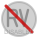

🟢 启用状态图标
19×19 像素
38×38 像素
状态： 功能可用
清晰、饱和的颜色，表示扩展正常工作
🔴 禁用状态图标
19×19 像素

38×38 像素
状态： 功能禁用
半透明效果 + 对角线，清晰传达禁用状态
🎯 新禁用状态图标的优化特性
- 半透明效果：图标主体使用 40% 透明度，而不是完全灰色
- 视觉层次：保持原始图标的可识别性，同时明确表示禁用状态
- 对角线指示器：红色对角线清晰表示"禁用"状态
- 状态文字：小字体"OFF"/"DISABLED"提供额外的状态提示
- 渐进式设计：从启用到禁用的视觉过渡更加自然
- 多尺寸支持：19px 和 38px 两种尺寸保持一致的视觉效果
| 对比项目 | 旧版本（全灰色） | 新版本（半透明+指示器） |
|---|---|---|
| 视觉识别度 | ❌ 图标变得难以识别 | ✅ 保持图标可识别性 |
| 状态传达 | ⚠️ 可能被误认为加载中 | ✅ 明确表示禁用状态 |
| 用户体验 | ❌ 视觉反馈不够清晰 | ✅ 清晰的视觉反馈 |
| 设计一致性 | ❌ 与现代UI设计不符 | ✅ 符合现代设计规范 |
🧪 测试说明
要测试新的禁用状态图标效果，请按照以下步骤操作：
- 确保 rVim 扩展已安装并加载了最新的图标文件
- 点击浏览器工具栏中的 rVim 图标打开弹出窗口
- 点击 "Disable rVim" 按钮禁用扩展
- 观察工具栏中的图标是否变为半透明的禁用状态
- 再次点击图标，选择 "Enable rVim" 恢复正常状态
- 验证图标是否正确切换回启用状态
预期结果：禁用状态下的图标应该显示为半透明效果，带有红色对角线，而不是简单的全灰色。